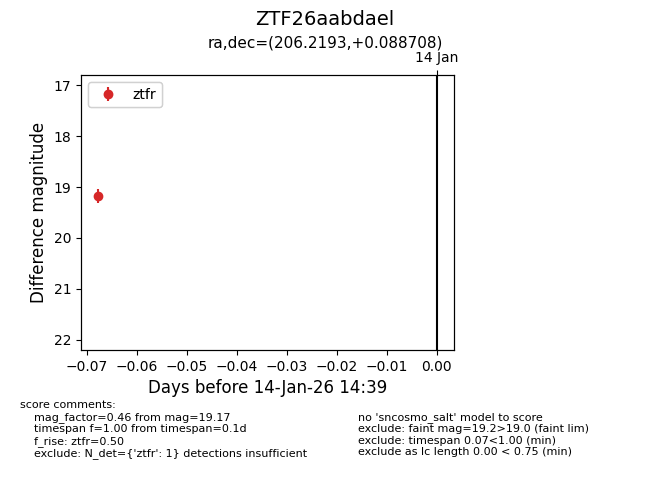
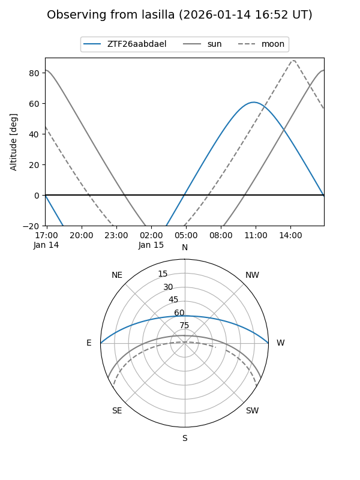
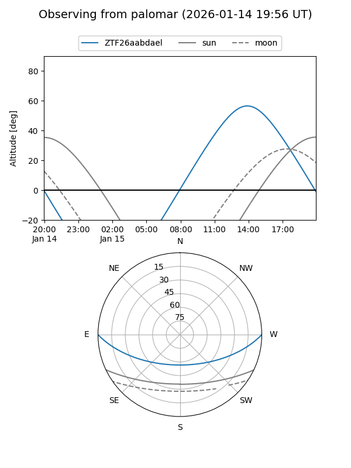

ZTF26aabdael
Target ZTF26aabdael at 2026-01-14 14:40
Aliases and brokers:
FINK: link
Lasair: link
ALeRCE: link
alt names
ZTF26aabdael (ztf,fink_ztf)
Coordinates:
equatorial (ra, dec) = 206.2193,+0.08871
equatorial (HMS+DMS) = 13:44:52.64,+00:05:19.35
galactic (l, b) = (330.5172,+60.06685)
Flags:
Photometry:
last ztfr=19.17
1 ztfr detections
Lightcurve

Visibility


Additional plots